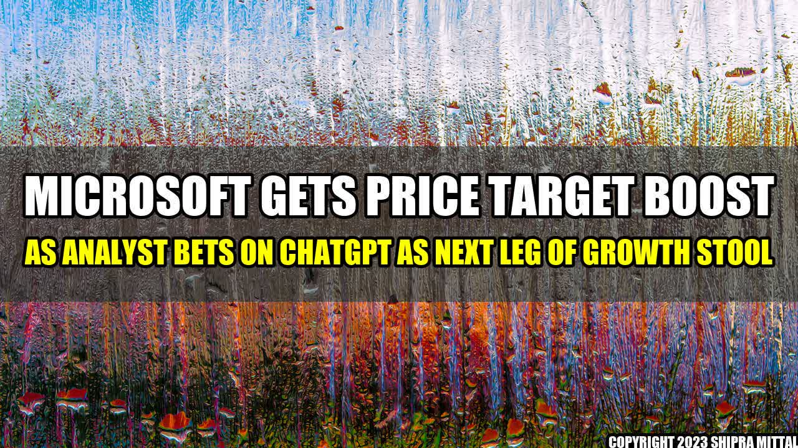

Microsoft Gets Price Target Boost As Analyst Bets On ChatGPT As Next Leg Of Growth Stool

Microsoft has received a boost in its price target from an analyst who believes that the tech giant's ChatGPT could be the next major contributor to its growth.
For those who are unfamiliar, ChatGPT is an AI-based natural language processing tool developed by Microsoft that can generate human-like responses to queries and has been integrated into various Microsoft products, including Bing and Office 365.
This is not the first time that ChatGPT has been touted as a major driver of Microsoft's growth, but the recent endorsement from the analyst has caused many investors to sit up and take notice.
So, what exactly is ChatGPT, and how could it impact Microsoft's growth in the future? Let's take a closer look.
What is ChatGPT?
ChatGPT (or Generative Pre-trained Transformer) is a natural language processing tool developed by OpenAI and adopted by Microsoft in 2020. Its primary purpose is to generate human-like responses to queries, making it ideal for use in chatbots, virtual assistants, and other similar applications.
What sets ChatGPT apart from other natural language processing tools is its ability to generate responses that are not only accurate but also contextually relevant and engaging. This is achieved through the use of deep learning algorithms, which learn from vast amounts of data and are continually refined over time.
Since its release, ChatGPT has been integrated into several Microsoft products, including Bing, Office 365, and Dynamics 365. These integrations have allowed Microsoft to leverage the power of ChatGPT to enhance the user experience of its products and services and provide a more seamless and intuitive experience for its customers.
How Could ChatGPT Impact Microsoft's Growth?
Many analysts believe that AI and machine learning are set to play a significant role in the future of computing, and Microsoft is well-positioned to capitalize on this trend with its strong focus on cloud computing and AI-powered products and services.
ChatGPT could be a key contributor to Microsoft's growth in this area, as it allows the company to offer more advanced and sophisticated natural language processing capabilities to its customers. This, in turn, could drive increased adoption of Microsoft's products and services and cement the company's position as a leader in the AI space.
One area where ChatGPT could have a significant impact is in the development of virtual assistants and chatbots. As more and more businesses look to automate customer service and support, tools like ChatGPT could become increasingly valuable in providing a more seamless and satisfying customer experience.
Conclusion
- Microsoft has received a price target boost thanks to ChatGPT, an AI-based natural language processing tool that is poised to play a significant role in the future of computing.
- ChatGPT's ability to generate human-like responses to queries could make it a key contributor to Microsoft's growth in the AI space.
- As the trend towards automation and AI-powered products and services continues, Microsoft's focus on cloud computing and machine learning will likely make it a major player in the industry.
If you're interested in learning more about ChatGPT and Microsoft's AI initiatives, be sure to follow the links below for more information:
Akash Mittal Tech Article
Share on Twitter Share on LinkedIn